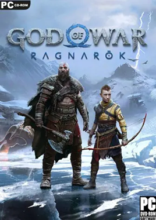

Acompañado únicamente por Mimir, Kratos se embarca en un viaje profundamente personal y reflexivo que le obligará a dominar cuerpo y mente al enfrentarse a los desafíos del Valhalla en una misteriosa aventura rejugable que combina el combate emblemático de God of War Ragnarök (2024) PC Full Español con elementos completamente nuevos inspirados en el género roguelite.
Ficha Tecnica:
Título: God of War Ragnarök PC-GAME
Género: Acción, Aventura, Rol
Fecha de lanzamiento: 19 de Septiembre de 2024
Fecha de Actualización: 15 de Noviembre de 2024
Formato: ISO
Idioma Voces y Textos: Español Latino, Español
España, Ingles, entre otros
Tamaño: 79.47 Gigas
Desarrollado por Santa Monica Studio y adaptado para PC en colaboración
con Jetpack Interactive, llega God of War Ragnarök, un épico y emotivo viaje en el que
Kratos y Atreus deberán decidir a qué se aferran y qué dejan ir.
En God of War Ragnarök,
la secuela del aclamado God of War (2018), el Fimbulvetr está en marcha. Kratos y Atreus deben
viajar a cada uno de los Nueve Reinos en busca de respuestas mientras las fuerzas asgardianas de
Odín se preparan para la batalla profetizada que supondrá el fin del mundo. Por el camino, explorarán
paisajes míticos increíbles y se enfrentarán a temibles enemigos, como monstruos y dioses nórdicos. A
medida que se avecina la amenaza del Ragnarök, Kratos y Atreus tendrán que elegir entre la seguridad de
su familia y la de los reinos
Características:
Imagenes:
Audio
Mínimos:
Requiere un procesador y un sistema operativo de 64 bits
Sistema Operativo: Windows 10 64-bit
Memoria: 8 Gigas de RAM
Procesador: Intel i5-4670k o AMD Ryzen 3 1200
Gráficos: NVIDIA GTX 1060 (6 Gigas) o AMD RX 5500 XT (8 Gigas) o Intel Arc A750
Almacenamiento: 190 Gigas de espacio disponible
DirectX: Versión 11
Recomendados:
Sistema Operativo: Windows 10 64-bit
Procesador: Intel i5-8600 o AMD Ryzen 5 3600
Memoria: 16 Gigas de RAM
Gráficos: NVIDIA RTX 2060 Super o AMD RX 5700 o Intel Arc A770
Almacenamiento: 190 Gigas de espacio disponible
DirectX: Versión 11